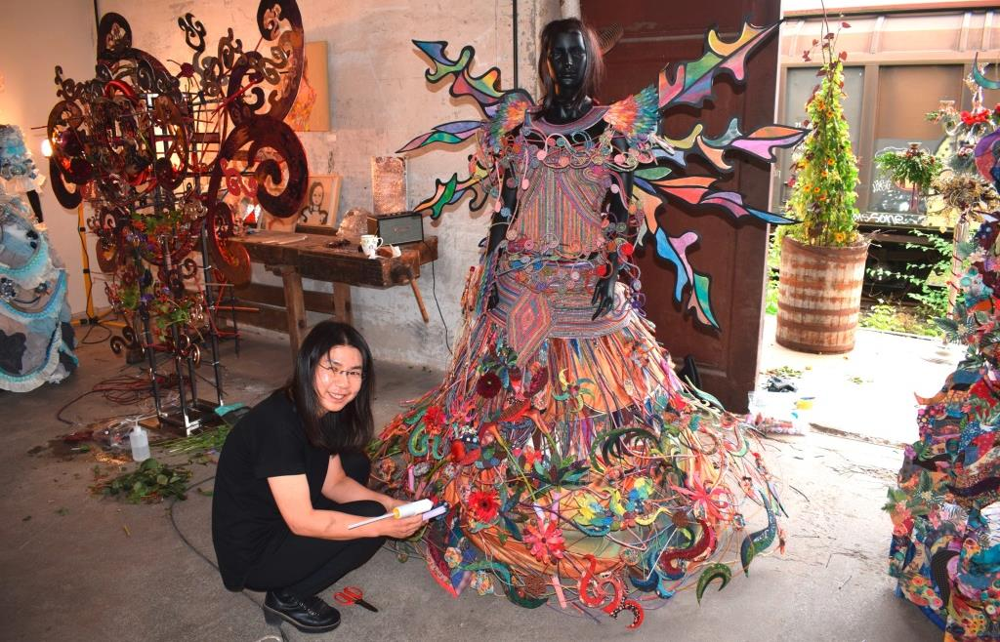
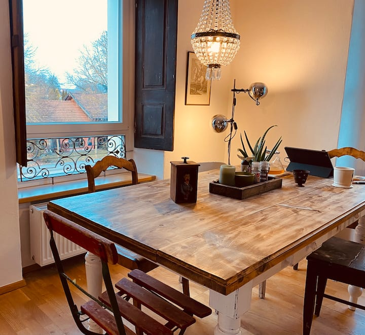

Fotogramm & Natur
Cyanotypie: Bilder aus Pflanzen & Licht
Historisches Edeldruckverfahren: Mit gesammelten Pflanzen, UV-Licht und mineralischen Emulsionen entstehen unverwechselbare preußischblaue Unikate.
Werkhalle 4 · Lagerplatz 4 · Furth im Wald
„Wo Furth im Wald ein bisschen wie die Hauptstadt wirkt.“
idowa Magazin„Vom Lost Place zum lebendigen Treffpunkt für Kunst und Kultur.“
Regionalberichterstattung Cham„Deutsch-tschechische Kultur- und Zirkus-Residency im Grenzraum.“
Kultur & GrenzlandUnter Anleitung erfahrener Gestalter oder in freier Werkstattarbeit: Nimm dir Zeit für handwerkliche Vertiefung und künstlerische Prozesse.
Historisches Edeldruckverfahren: Mit gesammelten Pflanzen, UV-Licht und mineralischen Emulsionen entstehen unverwechselbare preußischblaue Unikate.

ObjektkunstForm, Linie und Reduktion: Gestaltungskurse nach asiatischen Prinzipien und experimenteller Objektkunst mit Naturmaterialien.

Klausuren & RetreatsRückzugsort für Arbeitsgruppen, Agenturen und Initiativen. Der massive 8-Personen-Tisch und die Werk-Küche bieten die perfekte Klausur-Infrastruktur.
Wir freuen uns über Dozenten, Künstler und Trainer, die unsere Räume für Seminare nutzen möchten.
Die Werkhalle 4 ist regelmäßiger Schauplatz grenzüberschreitender Kulturresidenzen. Unter anderem verwandelt sich die Halle für die deutsch-tschechische Zirkus-Residenz in einen lebendigen Proben- und Austauschort.
Zeitgenössischer Zirkus, Akrobatik und Feuershows in Zusammenarbeit mit Künstlern aus Bayern und Tschechien (z. B. Los Cirkulos).
Arbeitsaufenthalte für bildende Künstler, Bildhauer und Autoren mit freiem Zugang zu Atelier- und Werkstattflächen.
Öffentliche Werkstattgespräche, Proben-Einblicke und Begegnungsabende für Besucher aus der Region.
Für Kursteilnehmer, Künstler in Residenz, kleine Teams oder Ruhesuchende steht die gesamte Werkhalle als privates Atelier-Loft zur Verfügung.
Hier verbindet sich der Charakter des ehemaligen Bahngebäudes mit zeitgenössischer Kunst, Kaminwärme und erholsamer Stille im Oberen Bayerischen Wald.
„Ein inspirierender Ort, der den Geist öffnet. Die Kunst an den Wänden und das Licht in der Halle schaffen eine ganz eigene, beruhigende Atmosphäre.“
„Wir haben hier mit unserem Kreativ-Team drei Tage gearbeitet. Der riesige Tisch, die Küche und der Kamin waren perfekt für intensiven Austausch.“
„Das Loft ist mit so viel Hingabe und Detailgefühl gestaltet. Ein absolutes Highlight in Furth im Wald — wir kommen definitiv wieder.“
Ob für Workshop-Teilnahmen, Gastresidenzen, private Klausuren oder allgemeine Fragen zum Haus — wir freuen uns auf deine Nachricht.
Schreibe uns unverbindlich zu Workshops, Ateliernutzung, Residenzen oder einem Aufenthalt.